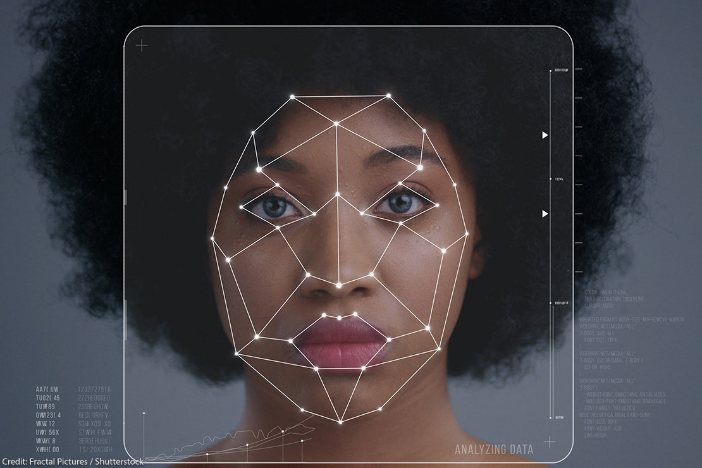

Automated Proctoring System using computer vision Techniques
Devender Tuppada
Introduction
Covid-19 has had a devastating impact on school systems all around the world. Many
institutions throughout the world have switched from face-to-face to online course
delivery and examinations because of an increase in the number of instances. All on-
campus classes and activities at post-secondary institutions have been changed from
face-to-face to alternative modes of delivery, which are largely delivered through
online education.
The arrival of Covid-19 has ushered in a new era of
distance learning. Since schools and universities
have closed, learning has transferred to apps like
google meets, microsoft teams and zoom. Almost
all colleges have changed their curricula to reflect
the current reality.
Problem
1.Cameras
2.Mic
Sensors
Most of the sensors where contact image sensors these sensors can capture color or black and white images, the captured images undergoes prepocessing feature extraction.
Methodology

Face Detection
Face detection is a difficult computer vision task that involves detecting and
locating people in images. Face identification models like Haar, dlib, Multi-
task Cascaded Convolutional Neural Network (MTCNN), and OpenCV's DNN
module were compared. The DNN module in OpenCV gives the best result.
Facial Landmarks
The task of detecting and tracking significant facial landmarks is known as
facial landmark detection. Previously, Dlib's model was used, however it
does not work well when the face is at an angle. As a result, the proposed
model for landmark detection is based on a convolutional neural network
developed with tensorflow. It is used for tracking eyes, mouth opening
detection, and head pose estimation
Success
The system helps in conducting examinations by fair means and hence,
maintains its integrity. This study demonstrates how to avoid cheating in online examinations by employing semi-automated proctoring based on vision and audio capabilities, as well as monitoring several students at once.
Failures
It won’t be able to capture the object accurately.
Challenges
We tested the model with different threshold values and it was found that the model detects the eyeball clearly when the threshold is set between 120-130.
Future and Conclusions

I will let readers know about the research labs (CMU, etc) doing research in this area and
what they are currently working on (I will send email and contact professor in charge of
lab to ask about it).
Y. Atoum, L. Chen, A. X. Liu, S. D. H. Hsu and X. Liu, "Automated Online Exam
Proctoring," in IEEE Transactions on Multimedia, vol. 19, no. 7, pp. 1609-1624, July 2017, doi: 10.1109/TMM.2017.2656064.
2] Kenrie Hyltona, Yair Levy, Laurie P.Dringusb, Utilizing webcam-based proctoring to deter misconduct in online exams, Computers & Education Volumes 92–93, January–February 2016, Pages 53-63
1.What is Image processing?
2.What is Convolution Neural Network?
3.What's the purpose of grayscaling?
4.What are computer vision libraries?
Answers
1.Image processing is a method to perform some operations on an image, in order to get an enhanced image or to extract some useful information from it.
2.A type of AI that allows software applications to become more accurate at predicting outcomes without being explicitly programmed to do so
3.Grayscale is the range of whiteness to blackness of a digital image. Programmers take an image that's in color and change it to grayscale, which is called grayscaling. This helps simplify the image data so a computer can more easily process the input.
4.A computer vision library is a where developers store the equations and functions that the computer might use. They can use these to create neural networks that the computer uses to learn and process data.